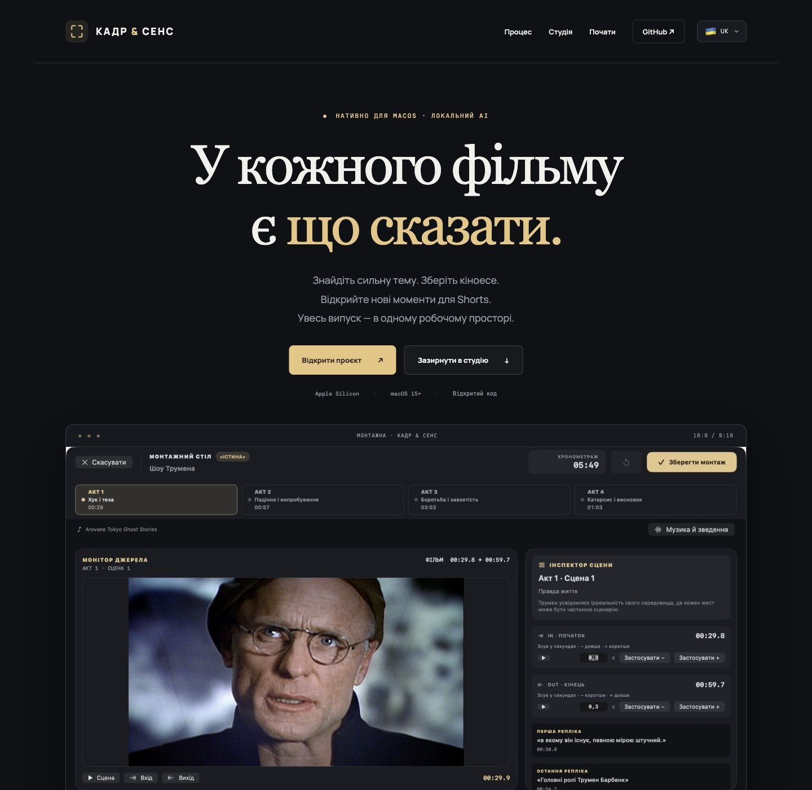
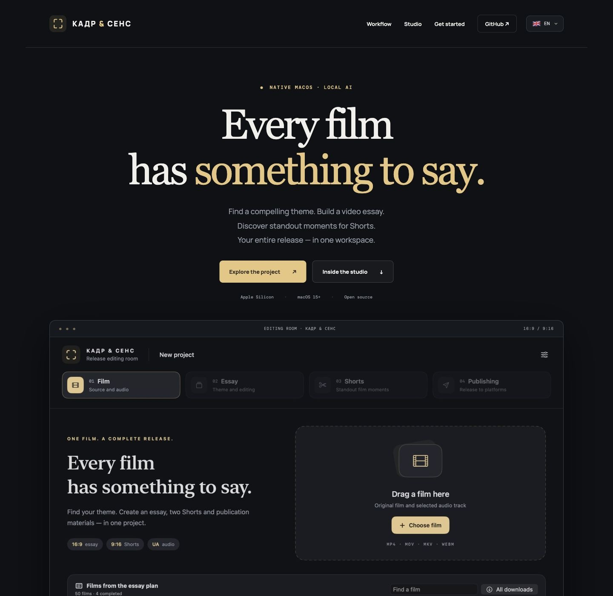
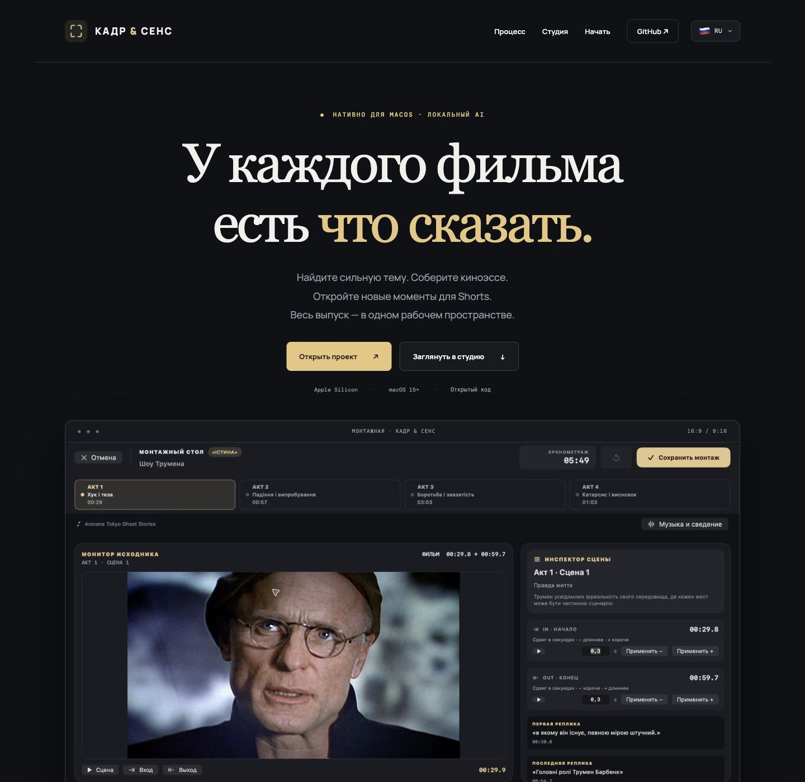
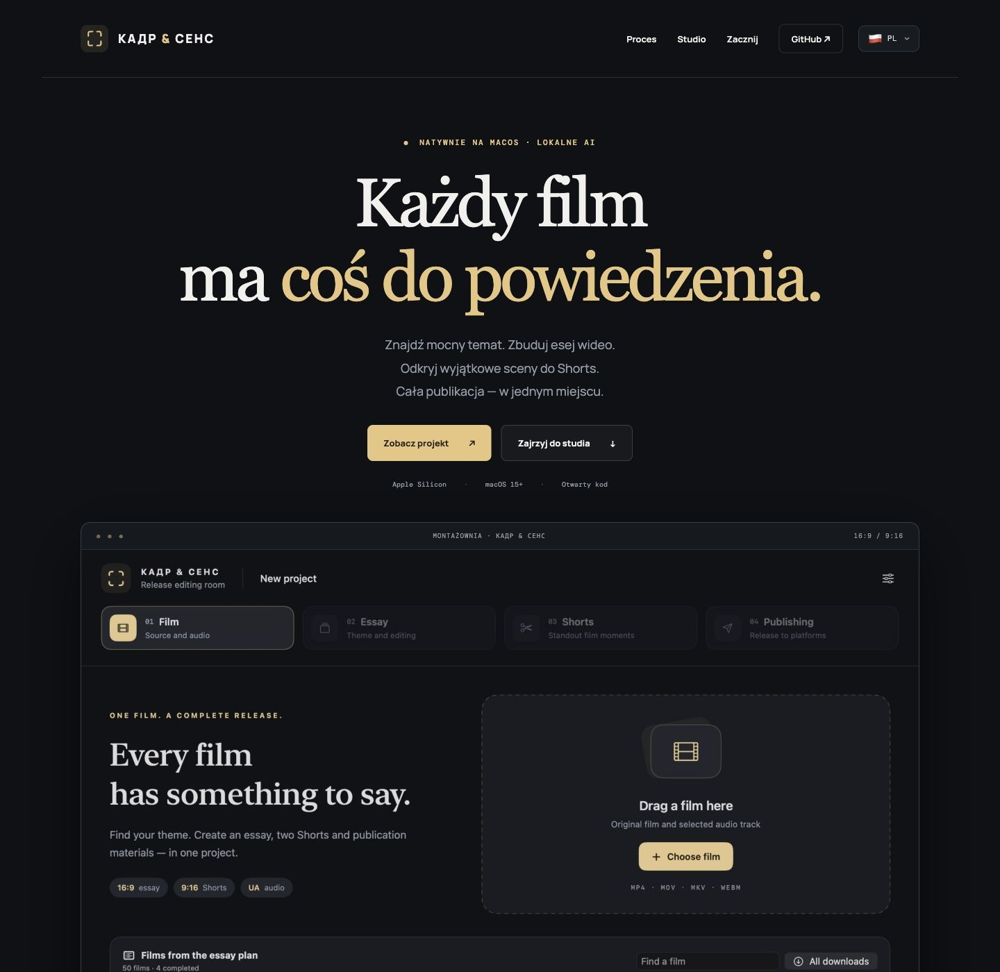
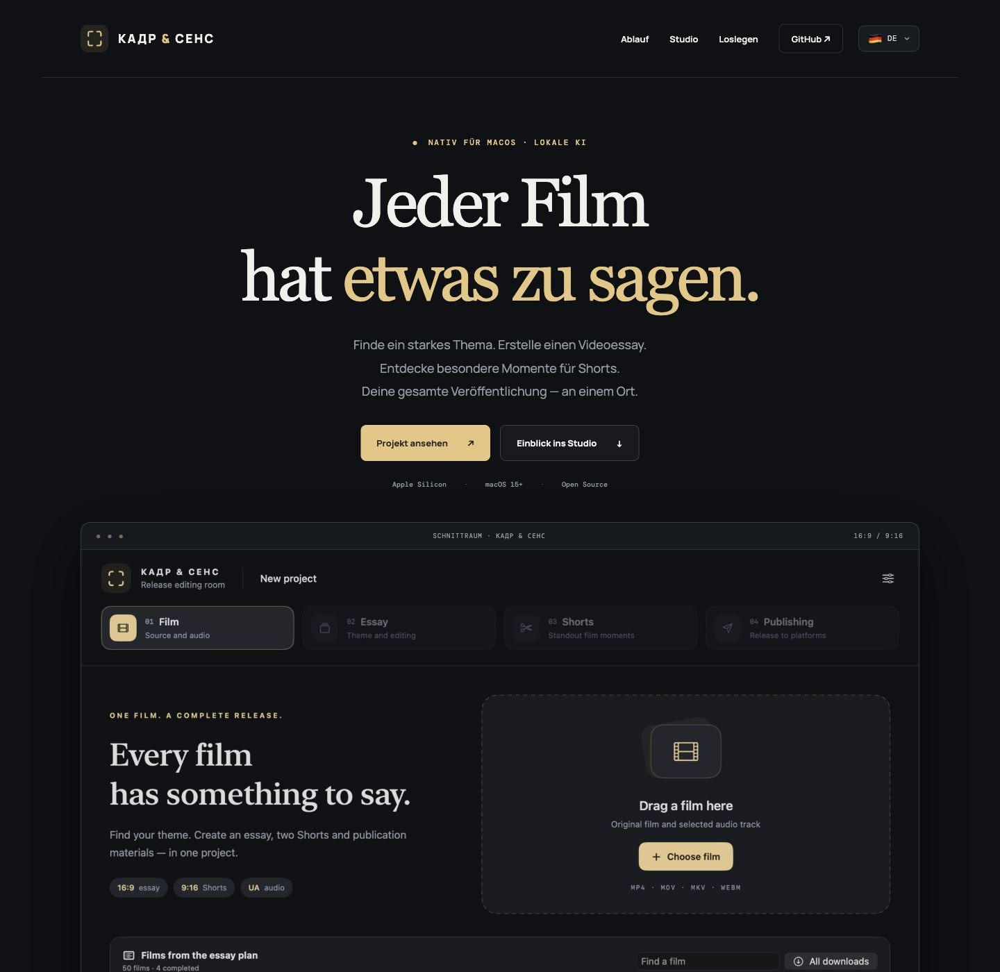
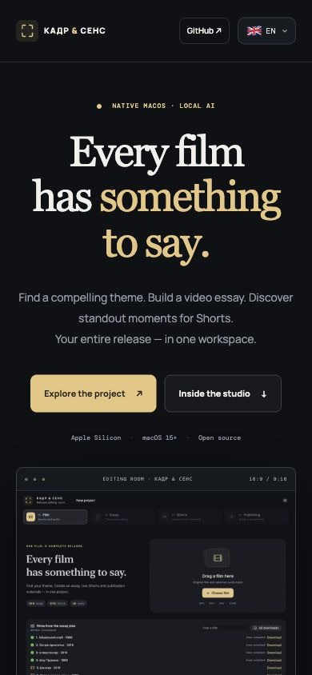

Responsive, multilingual product website
Design, copy, localization and frontend development in HTML, CSS and JavaScript. Five complete language versions, a compact flag-based switcher, accessible workflow tabs and real product screenshots.






All five desktop versions were captured by switching the live website language. Click a desktop image to inspect the complete page.